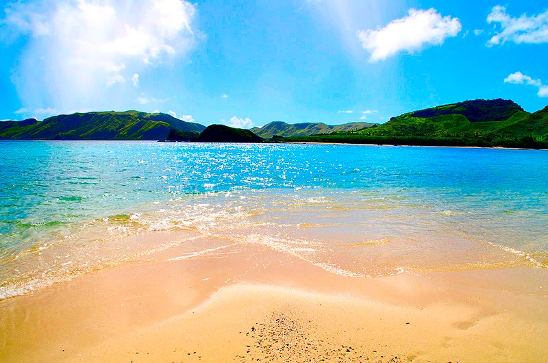
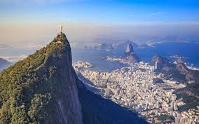
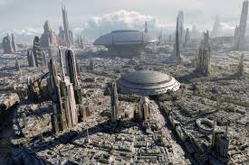
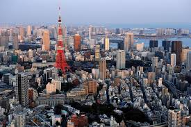

The Places I would like to Visit.

Fiji, a country in the South Pacific, is an archipelago of more than 300 islands. It's famed for rugged landscapes,
palm-lined beaches and coral reefs with clear lagoons. Its major islands, Viti Levu and Vanua Levu, contain most of the
population.

London, the capital of England and the United Kingdom, is a 21st-century city with history stretching back to Roman times. At its
centre stand the imposing Houses of Parliament, the iconic ‘Big Ben’ clock tower and Westminster Abbey, site of British monarch
coronations.

Rio de Janeiro is a huge seaside city in Brazil, famed for its Copacabana and Ipanema beaches, 38m Christ the Redeemer statue
atop Mount Corcovado and for Sugarloaf Mountain, a granite peak with cable cars to its summit.The city is also known for its sprawling
favelas (shanty towns).

Paris is a major European city and a global center for art, fashion, gastronomy and culture. Its 19th-century
cityscape is crisscrossed by wide boulevards and the River Seine. The city is known for its landmarks such as the Eiffel Tower and the
Gothic Notre-Dame cathedral.

A city-covered planet, Coruscant is the vibrant heart and capital of the galaxy, featuring a diverse mix of citizens and culture. It
features towering skyscrapers, streams of speeder-filled air traffic, and inner levels that stretch far below the world’s surface. Its found
in Star Wars.

Tokyo, Japan’s busy capital, mixes the ultramodern and the traditional, from neon-lit skyscrapers to historic temples. The opulent Meiji
Shinto Shrine is known for its towering gate and surrounding woods. The Imperial Palace sits amid large public gardens. It is also home to the
most restaurants.
I want to visit these places because they are all radically different from the experiences I get here in STL. Every one of them would provide a
unique experience that I would be entirely unable to get anywhere in STl, or Missouri, or even America. There are two places I would go for beaches
are Fiji, for that clear water, and Rio de Jinero, for the soft Copa Cabana Beaches. I have three cities on this list, and no I don't regard STL
to be a big city. The first big city I want to go to is Paris. I find it to be a beautiful city that I would not mind spending my time exploring.
London I want to visit for the feel of the city, and I believe that it would be an extremely cool place to not only visit, but possibly live in.
I want to visit Tokyo for not only the radically different feel than America, but also because Tokyo has an immense amount of restaurants.
For example, New York has 200-300 restaurants within the city limits. Tokyo has around 2000-3000. The last place I want to visit is Coruscant, the
city from star wars, to fulfill a dream to be in the star wars universe.